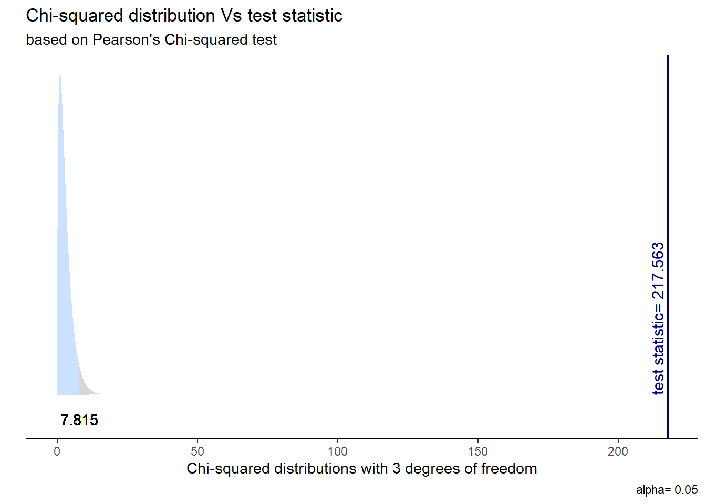

.png)
Asociación con categóricas y Chi-cuadrado
Flujo de trabajo en R
Tal vez una de las dificultades más comunes o cotidianas del uso de R es el orden de trabajo, en donde tenemos cientos de archivos, scripts, gráficos, bases de datos u otros repartidos desordenadamente en nuestro computador. También se da mucho el caso en que, cuando queremos trabajar con alguien, tenemos que cambiar las rutas de los archivos, por ejemplo en dónde están las bases de datos, ya que nuestros ordenadores y usuarios se llaman y son escencialmente distintos.
¿Cómo podemos sortear eso? Siguiendo un flujo de trabajo reproducible, autocontenido y ordenado. En este curso trabajaremos R con un flujo de trabajo reproducible, basado en el sistema IPO. El protocolor IPO es una plantilla/protocolo de estructura digital de carpetas que tiene por objetivo el organizar, procesar y documentar los datos de un proyecto de investigación con miras a la apertura de los datos en un repositorio público y de acceso libre. En concreto, el sistema IPO se propone abordar brevemente todo lo referente a los Datos, Métodos y Resultados.
Lleva este nombre por el sistema de carpetas que se implementan: Input, Procesamiento y Output. En la carpeta Input guardaremos todos aquellso recursos iniciales que usaremos, como las bases de datos, el libro de códigos, entre otros. En la carpeta de Procesamiento, como dice el nombre, guardaremos todos los archivos que procesen y analicen datos. En la carpeta Output guardaremos todo aquello que hayamos producido en los archivos de procesamiento, como las bases de datos procesadas listas para compartir o publicas, los documentos de reporte, informes o analísis, gráficos o tablas.
La implementación de la reproducibilidad en este tipo de protocolos se basa en generar un conjunto de archivos auto-contenidos organizado en una estructura de proyecto que cualquier persona pueda compartir y ejecutar. En otras palabras, debe tener todo lo que necesita para ejecutar y volver a ejecutar el análisis. Para conocer más, visita el Laboratorio de Ciencia Abierta.

Rproject
Un Rproject es una herramienta de R que nos permite establecer un directorio de trabajo en una carpeta de nuestro computador. Al hacerlo, establecemos un espacio de trabajo que permite crear una estructura de carpetas donde guardar los documentos asociados al proyecto. De esta forma, creamos un conjunto de archivos autocontenidos en un solo lugar que nos permite organizar nuestro trabajo y facilitar la reproducibilidad. En las próximas sesiones estableceremos un protocolo de trabajo que permite organizar y armonizar el trabajo: el protocolo IPO.
Para crear un Rproject:
Abrir Rstudio
Seleccionar Archivo -> Nuevo proyecto

Seleccionamos la opción de directorio existente
Seleccionamos la carpeta donde descargamos nuestro repositorio de Github en el paso anterior
Apretamos el botón de crear proyecto
Objetivo de la práctica
El objetivo de esta guía práctica es introducirnos en técnicas de asociación entre variables categóricas, aplicando lo apredendido hasta ahora sobre inferencia estadística.
En detalle, aprenderemos:
- Generar y analizar tablas de contingencia (o cruzadas)
- Estimar e interpretar la prueba de Chi-cuadrado
- Aplicar coeficientes de correlación entre variables categóricas
Recursos de la práctica
En esta práctica trabajaremos con un subconjunto de datos previamente procesados de la Encuesta de Caracterización Socioeconómica (CASEN) del año 2022, elaborada por el Ministerio de Desarrollo Social y Familia. Para este ejercicio, obtendremos directamente esta base desde internet. No obstante, también tienes la opción de acceder a la misma información a través del siguiente enlace: CASEN 20222. Desde allí, podrás descargar el archivo que contiene el subconjunto procesado de la base de datos CASEN 2022.
Preparación datos
Comencemos por preparar nuestros datos. Iniciamos cargando las librerías necesarias.
Código
pacman::p_load(tidyverse, # Manipulacion datos
sjPlot, # Tablas
psych, # Correlaciones
DescTools, # Tablas
gginference, # Visualizacion
rempsyc, # Reporte
broom) # Varios
options(scipen = 999) # para desactivar notacion cientifica
rm(list = ls()) # para limpiar el entorno de trabajoCargamos los datos directamente desde internet.
Código
load(url("https://github.com/cursos-metodos-facso/datos-ejemplos/raw/main/casen_proc.RData")) #Cargar base de datos
dim(proc_casen)[1] 3000 29Contamos con 29 variables (columnas) y 3000 observaciones (filas).
Tablas de contingencia
Una tabla de contingencia es una de las maneras más simples y útiles para representar el cruce entre dos variables categóricas.
Con ella, podemos obtener en las celdas las frecuencias conjuntas entre ambas variables, es decir, cuántos casos de una determinada categoría de la variable Y ocurren conjuntamente con una determinada categoría de la variable X.
Además, podemos presentar los totales de cada fila y columna al exterior de la tabla, también conocidas como frecuencias marginales.
Veamos un ejemplo con ss_salud y universitaria:
Código
sjPlot::sjt.xtab(var.row = proc_casen$ss_salud, var.col = proc_casen$universitaria,
show.summary = F, emph.total = T)| s13. ¿A qué sistema previsional de salud pertenece? |
Educación superior alcanzada (si/no) |
Total | |
| No | Sí | ||
| 1. Sistema Público FONASA |
2027 | 524 | 2551 |
| 2. Isapre | 111 | 167 | 278 |
| 3. FF.AA. y del Orden |
37 | 22 | 59 |
| 4. Ninguno (particular) |
61 | 15 | 76 |
| Total | 2236 | 728 | 2964 |
Sumado a esto, tenemos:
Frecuencias absolutas: números que aparencen en la tabla (ya sean conjuntas o marginales)
Frecuencias porcentuales:
- porcentaje fila: % que cada frecuencia conjunta representa sobre la marginal de su fila
- porcentaje columna: % que cada frecuencia conjunta representa sobre la marginal de su columna
- porcentaje total: % que cada frecuencia conjunta representa sobre el número total de casos de la tabla
Veamos cómo incorporar el porcentaje fila y columna en la tabla.
Código
sjPlot::sjt.xtab(var.row = proc_casen$ss_salud,
var.col = proc_casen$universitaria,
show.summary = F,
emph.total = T,
show.row.prc = T, # porcentaje fila
show.col.prc = T # porcentaje columna
)| s13. ¿A qué sistema previsional de salud pertenece? |
Educación superior alcanzada (si/no) |
Total | |
| No | Sí | ||
| 1. Sistema Público FONASA |
2027 79.5 % 90.7 % |
524 20.5 % 72 % |
2551 100 % 86.1 % |
| 2. Isapre | 111 39.9 % 5 % |
167 60.1 % 22.9 % |
278 100 % 9.4 % |
| 3. FF.AA. y del Orden |
37 62.7 % 1.7 % |
22 37.3 % 3 % |
59 100 % 2 % |
| 4. Ninguno (particular) |
61 80.3 % 2.7 % |
15 19.7 % 2.1 % |
76 100 % 2.6 % |
| Total | 2236 75.4 % 100 % |
728 24.6 % 100 % |
2964 100 % 100 % |
Aquí, los porcentajes fila aparecen en azul y los porcentajes columna en verde.
Prueba de hipótesis con Chi-cuadrado
La prueba de Chi-cudrado (\(\chi^2\)) es una herramienta estadística utilizada para evaluar si existe una asociación significativa entre dos variables categóricas.
Testeamos la hipótesis de independencia en una tabla de contigencia. Por ejemplo, si decimos que existe una relación entre tener educación superior y la preferencia por algún sistema de salud, esperamos encontrar que un porcentaje más alto de quienes tienen educación superior se inclinen por un sistema de salud determinado.
Se basa en la comparación de las frecuencias observadas en una tabla de contingencia con las frecuencias esperadas si las variables fueran independientes. Si existe una gran diferencia entre las esperadas y las observadas, podemos suponer que hay una relación entre variables.
Prueba de Chi-cuadrado
Contrastamos la hipótesis nula (o de trabajo) de que las variables son idenpendientes entre ellas: \[ H_{0}: \pi_{fc} = \pi_{f}\pi_{c} \]
En relación a una hipótesis alternativa sobre que las variables están relacionadas: \[ H_{A}: \pi_{fc} \neq \pi_{f}\pi_{c} \]
Veamos un ejemplo con nuestros datos. Evaluemos si el nivel educacional se relaciona con el tipo de sistema de salud al que pertenecen las personas en Chile durante el 2022.
Apliquemos nuestros cinco pasos para inferencia.
- Formulamos nuestras hipótesis:
\(H_{0}\): No hay asociación entre el nivel educacional y la preferencia por un sistema de salud.
\(H_{A}\): El nivel educacional se asocia con la preferencia por un sistema de salud.
- Generar tabla de contingencia con frecuencias observadas y esperadas:
Código
conti_table <- table(proc_casen$ss_salud, proc_casen$universitaria)
conti_table
0 1
1 2027 524
2 111 167
3 37 22
4 61 15Además, podemos añadir las frecuencias marginales.
Código
row_sum <- margin.table(conti_table, 1)
col_sum <- margin.table(conti_table, 2)
conti_added <- cbind(conti_table, as.vector(row_sum))
conti_added <- rbind(conti_added, c(as.vector(col_sum), sum(conti_table)))
conti_added 0 1
1 2027 524 2551
2 111 167 278
3 37 22 59
4 61 15 76
2236 728 2964Ahora, generamos una tabla de contingencia con frecuencias esperadas.
Las frecuencias observadas corresponden a:
\[ f_{e_c} = \frac{{\text{(Total marginal de fila para la celda)} \times \text{(Total marginal de columna para la celda)}}}{{N}} \]
Usando nuestros datos la frecuencia esperada para la primera celda sería:
\[ f_{e_c} = \frac{(2551)*(2236)}{{2964}} = 1924.4\]
Esto debemos repetirlo para cada celda… pero podemos hacerlo más rápido con DescTools.
Código
exp_table <- DescTools::ExpFreq(conti_added, freq = "abs")
round(exp_table, 1) 0 1
1 1924.4 626.6 2551
2 209.7 68.3 278
3 44.5 14.5 59
4 57.3 18.7 76
2236.0 728.0 2964- Calcular el valor estimado de la prueba:
Establecemos la diferencia entre lo observado y lo esperado, siendo:
\[\chi^2=\sum\frac{(f_o-f_e)^2}{f_e}\]
Código
chi_stat <- sum(
(2027-1924.4)^2/1924.4,
(524-626.6)^2/626.6,
(111-209.7)^2/209.7,
(167-68.3)^2/68.3,
(37-44.5)^2/44.5,
(22-14.5)^2/14.5,
(61-57.3)^2/57.3,
(15-18.7)^2/18.7
)
chi_stat[1] 217.4706- Especifica el valor crítico de la prueba:
Código
df <- (4-1)*(2-1) #definimos grados de libertad
chi_critico <- qchisq(p = 0.05, df, lower.tail = F)
chi_critico[1] 7.814728- Contrasta el valor estimado con el crítico e interpreta los resultados:
Código
chi_stat > chi_critico[1] TRUEEn el análisis utilizando la prueba de \(\chi^2\) de Pearson para la asociación entre el tipo de sistema de salud y el nivel educativo, se encontró una relación significativa (χ2 = 217.56 , df = 3, p< .001). Por tanto, rechazamos la \(H_{0}\) sobre no asociación con un 95% de confianza, existiendo evidencia a favor de nuestra \(H_{A}\) ya que hay evidencia de una relación entre el sistema de salud y el nivel educativo.
- Y el cálculo directo en R:
Código
chi_results <- chisq.test(table(proc_casen$ss_salud, proc_casen$universitaria))
stats.table <- tidy(chi_results, conf_int = T)
nice_table(stats.table)statistic | p | parameter | Method |
|---|---|---|---|
217.56 | < .001*** | 3 | Pearson's Chi-squared test |
Visualicemos la distribución de esta prueba y su zona de rechazo.
Código
ggchisqtest(chi_results)